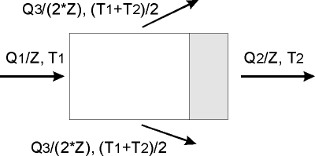

|
|
|


计算
本质上，两种计算方法都基于用于确定轴承热平衡的方程。在此计算中，您可以使用对流润滑或循环润滑。
- 非压力润滑（自润滑）轴承通过对流将热量散发到周围环境中。根据标准，散热系数 kA 介于 15 至 20 W/(m2*K) 之间。在程序中，默认值为 20W/(m2*K)，但您可以根据需要更改。
- 压力润滑轴承主要通过润滑剂散热。在这种情况下，您必须定义一个混合系数 M，其值必须在 0 到 1 之间。经验表明，该值通常在 0.4 到 0.6 之间。默认设置为 0.5，但可以更改。

图 30.3：单个瓦块的润滑剂与热量平衡
这些计算提供摩擦功率、最低润滑油膜厚度和工作温度的值。它们还计算循环润滑的润滑剂流量。
轴承力（空转时）仅用于确定最低允许润滑油膜厚度，除此之外无关紧要。载荷系数、摩擦系数和润滑流量根据 DIN 31653/31654 第 2 部分中提供的公式（而非图表）计算。可倾瓦推力轴承的 hmin/Cwed 比值根据可倾瓦的支承位置 aF* 计算。其公式在 ISO 12130 第 2 部分或 DIN 31654 第 2 部分中给出。
Calculation
Essentially, both calculation procedures are based on the equation used to ascertain the thermal balance in the bearing. You can use either convection or circulatory lubrication in this calculation.
- Non-pressure-lubricated (self-lubricating) bearings dissipate heat out to the surrounding environment by convection. According to the standard, the coefficient of thermal expansion kA lies between 15 . . and 20 W/(m2*K). In the program, the default value is 20W/(m2*K), but you can change this as required.
- Pressure-lubricated bearings mainly dissipate heat through the lubricant. In this case, you must define a mixture factor M, which must lie between 0 and 1. Experience shows that this usually lies between 0.4 and 0.6. The default setting is 0.5, but this can be changed.
Figure 30.3: Segment lubricant and heat levels
These calculations provide values for the friction power, the lowest lubricant film thickness and the operating temperature. They also calculate the lubricant flow rate for circulatory lubrication.
The bearing force (in idleness) is only used to determine the lowest admissible lubricant film thickness, and is otherwise irrelevant. The load coefficient, friction coefficient and lubrication flow rates are calculated according to the formulae (not the diagrams or tables) provided in DIN 31653/31654 Part 2. The hmin/Cwed ratio for tilting-pad thrust bearings is calculated from the support position of the tilting-pad aF*. The formula for this is given in ISO 12130 Part 2 or in DIN 31654 Part 2.